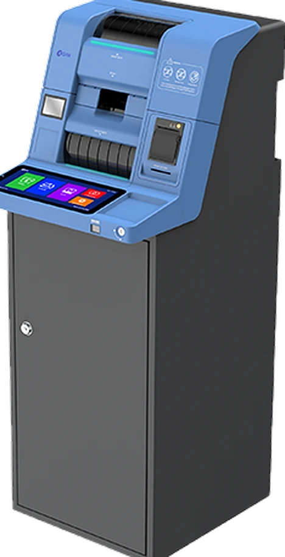
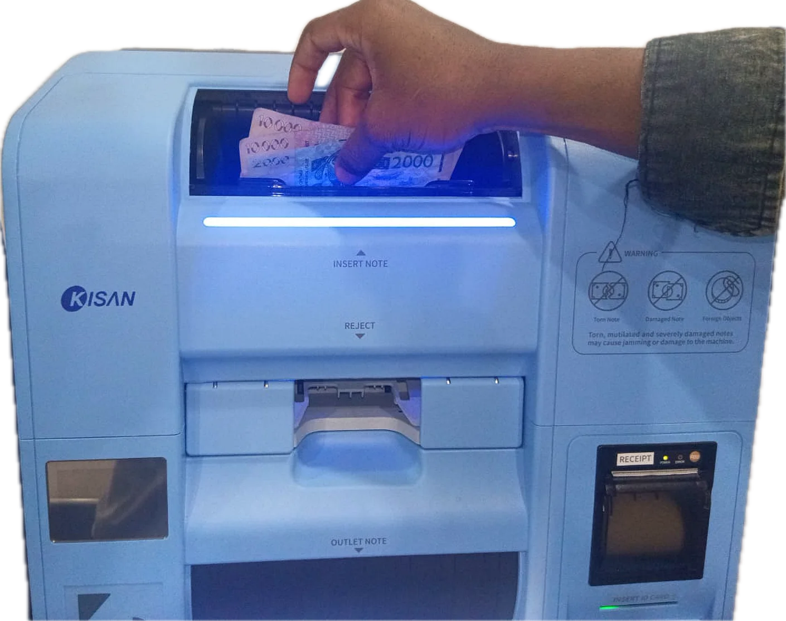
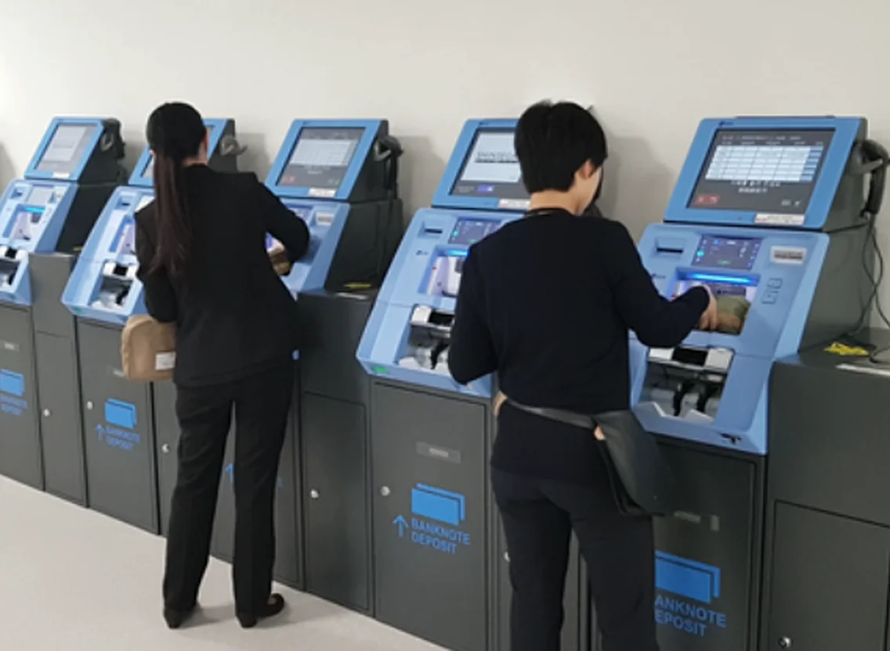
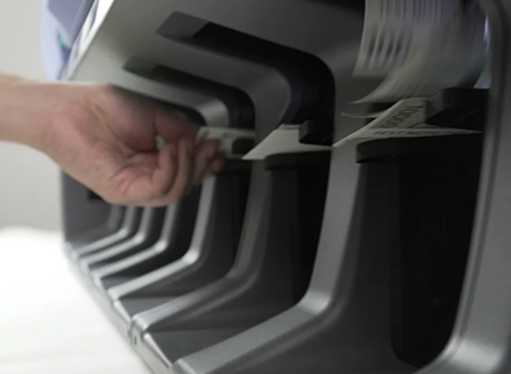
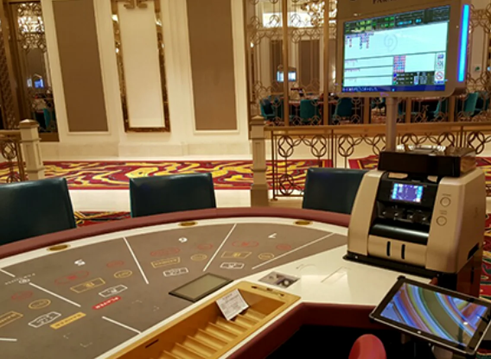
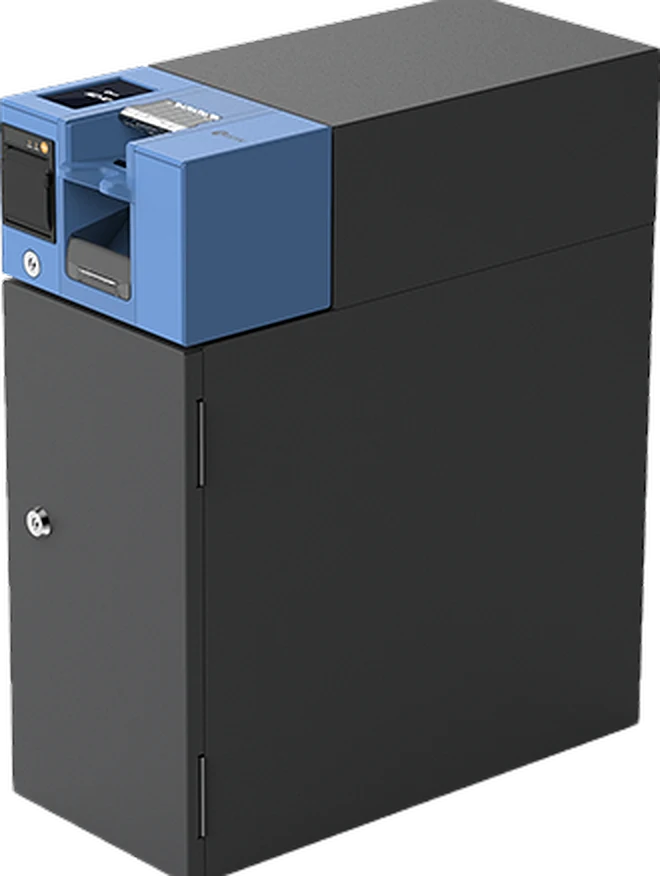
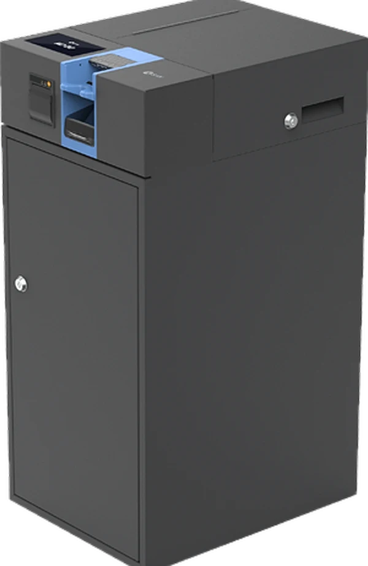
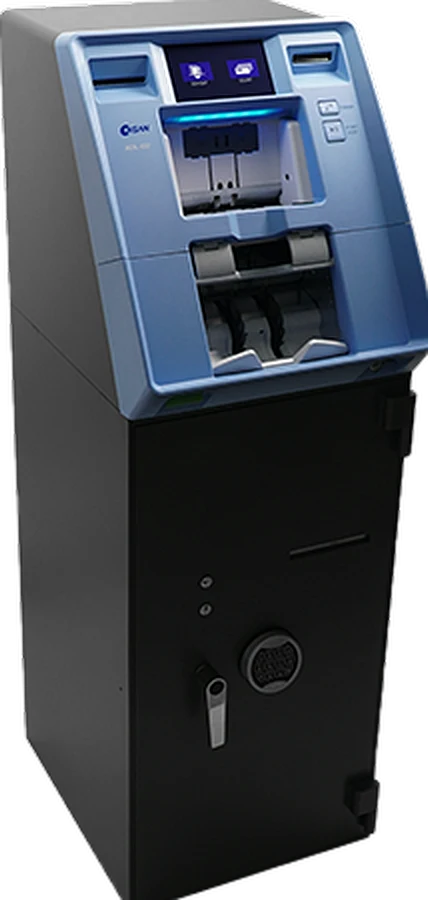
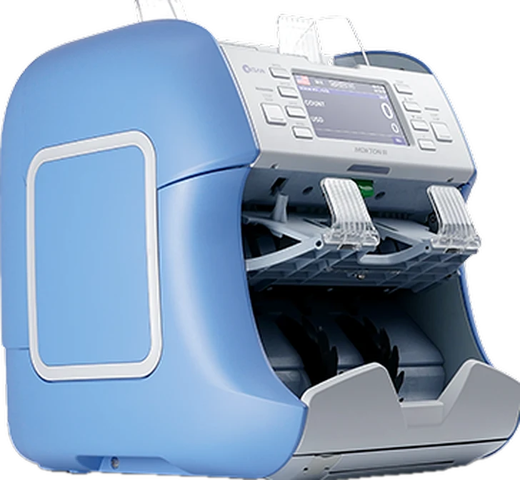
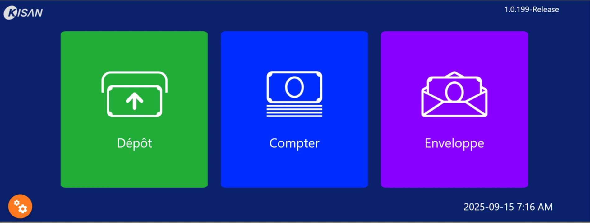

Dépôt · back-office, grands volumes
KD100
- Cadence
- 1 000 billets/min
- Entrée
- trémie de 200 billets
- Stockage
- 15 000 billets par sac
- Écran
- 12,3 pouces tactile

SBS installe et entretient en Côte d'Ivoire les automates de dépôt et les compteuses Kisan.

Les billets sont comptés et authentifiés pendant qu'ils passent. Les douteux tombent dans une poche à part.
Chaque dépôt laisse une trace : coupures, montant, numéros de série, reçu imprimé. Il est écrit dans un fichier XML, puis comptabilisé dans le core banking, en temps réel ou en différé.
Quatre terrains où travaillent déjà les machines Kisan.



Temps écoulé : 00:00
0 billets
0 billets
Faites défiler. Ici, chaque cran de molette est du temps qui passe.
Une barre = une liasse de 100 billets. Cadences nominales du constructeur. Choisissez les deux machines à comparer.
Même reconnaissance des billets, même reçu. D'une machine à l'autre, trois choses changent : la cadence, le coffre et la place au sol.
Dépôt · back-office, grands volumes

Dépôt · comptoir, point de vente

Dépôt · back-office, taille moyenne

Dépôt · mural, installable en extérieur

Compteuse · de table, 1 + 1 poches
Cochez, puis descendez : le reçu s'imprime en bas.
1 Brochure constructeur. 2 En valorisation, 1 500 en comptage simple. Fiche revendeur, à confirmer.

Continuez de défiler : il s'imprime, avec les machines que vous avez cochées.
SOCITECH BUSINESS SOLUTIONS
Abidjan, Côte d'Ivoire
Demande de devis
Date
Installationsur site
MaintenanceAbidjan
Demander un devis